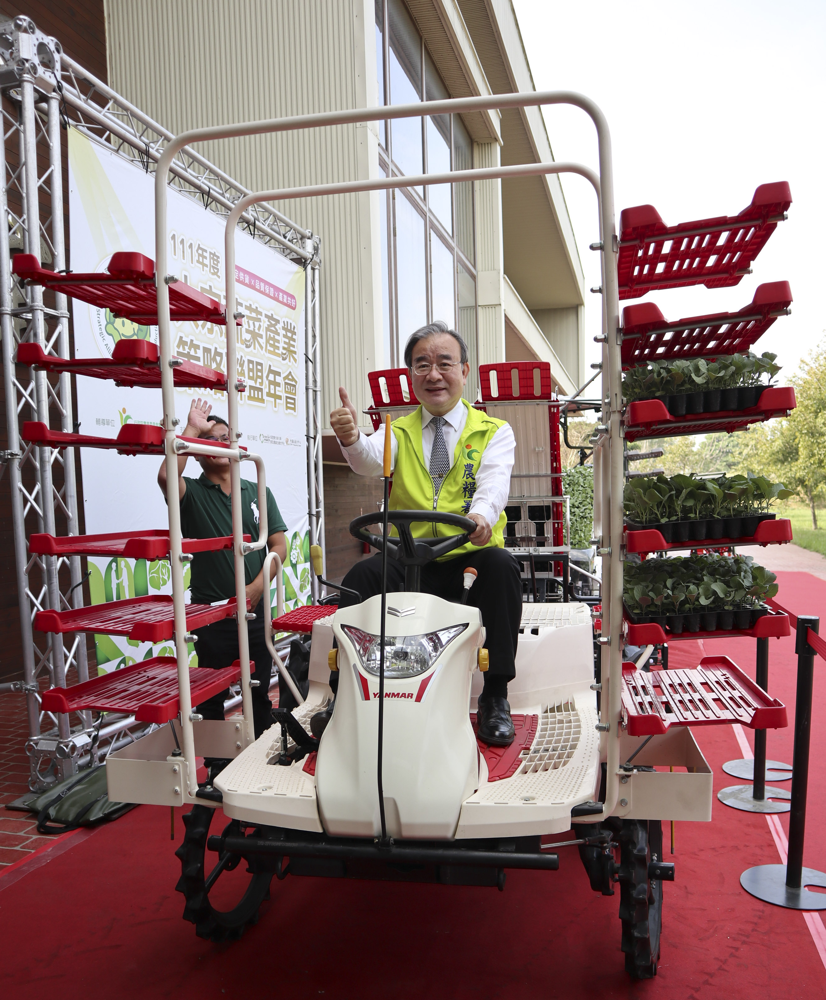

署長啟用第一台乘坐式蔬菜穴盤移植機（圖／農糧署）
111年度因全年甘藍交易價格佳，外銷報價尚難符合國外需求，外銷量少。供應和心果菜生產合作社30公噸(馬紹爾群島、新加坡等)、御賞屋10公噸(香港)，計40公噸。
111年度契作面積計45公頃，產量2,475公噸，扣除加工與外銷，內銷共2,103公噸。
由鮮勁農業生產合作社提供正暘農產公司、饒平合作農場、子茂果菜生產合作社等團膳及截切加工廠，計332公噸。由嘉禾益果菜生產合作社提供八方雲集1,560公噸。
1.大宗蔬菜策略聯盟於11月11日假臺灣大學雲林分部農業育成推廣中心-鋤禾館辦理年會，呈現田間種植標準化、機械化、採後分級自動化、聯盟共享分潤、甘藍產銷知能影片及新引進乘坐式自動取苗移植機啟用等，並以聯盟共好為未來願景，參與人數約120人。
2.協助北農甘藍分流措施111年計212.8公噸。